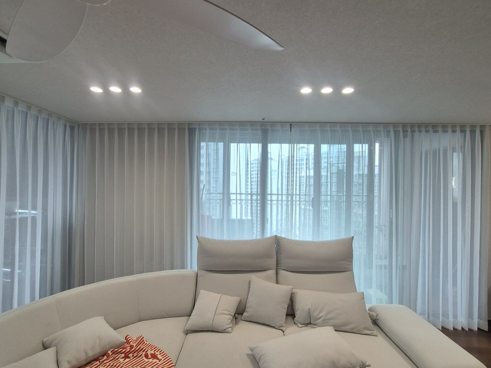
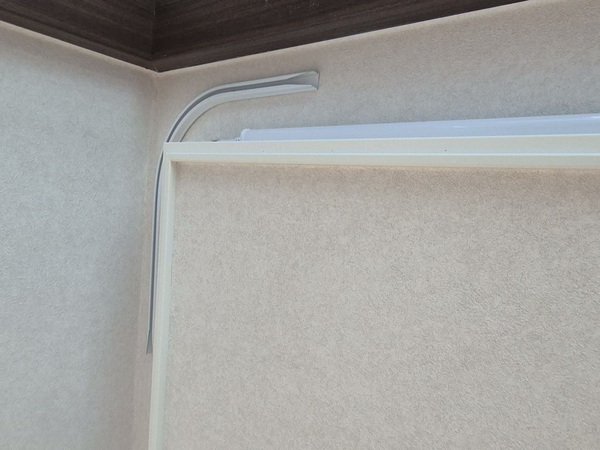
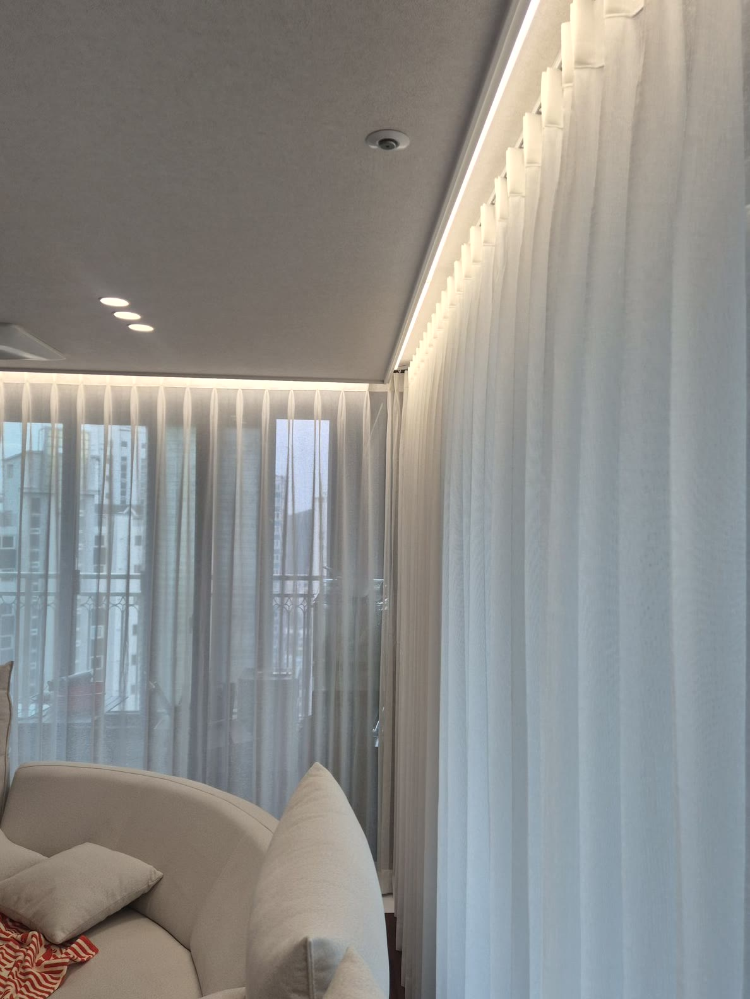
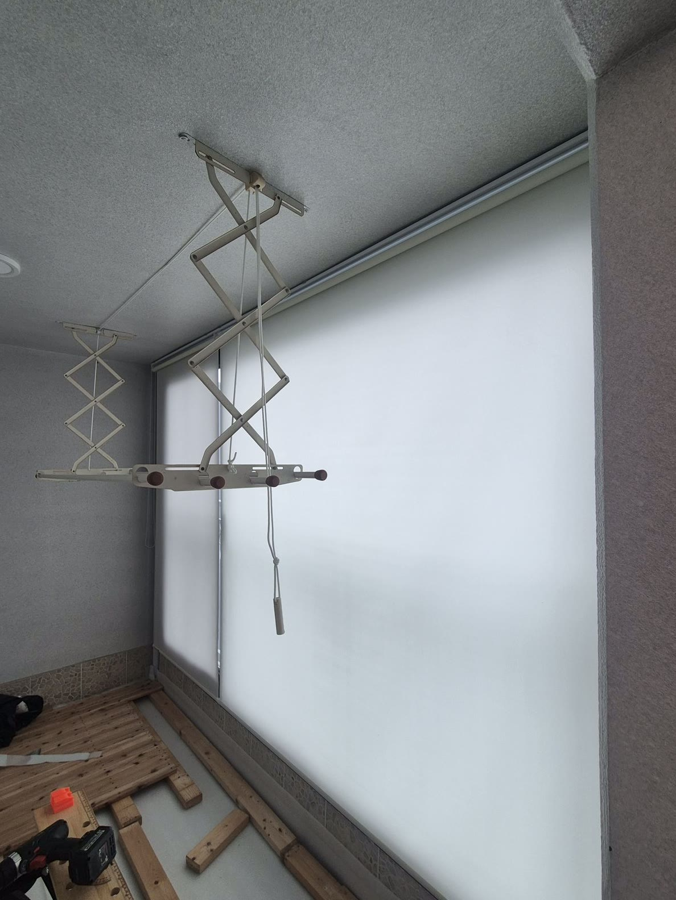

2026년 7월 17일 시공
포항 양덕 아파트
ㄱ자 거실 린넨커튼 · 베란다 롤스크린 시공후기

포항 양덕의 한 아파트에 다녀왔습니다.
처음 상담하실 때 고객님은 창마다 커튼을 따로 다는 걸 생각하고 계셨습니다.
흔히들 그렇게 떠올리시죠.
그런데 실측하러 가서 거실 창 구조를 보니, 생각이 달라졌습니다.
거실이 ㄱ자로 꺾인 구조였거든요.
이런 창은 커튼을 창마다 따로 끊어 달기보다, 레일을 코너까지 이어주면 훨씬 쓸모가 좋아집니다.
그래서 그 자리에서 방향을 바꿔 제안드렸습니다.

ㄱ자 레일로 이으면, 커튼이 코너를 넘어 다닙니다
레일을 ㄱ자로 이어두면 커튼이 한쪽 면에서 코너를 넘어 다른 면으로 자연스럽게 움직입니다.
창을 다 가리고 싶을 땐 전면을 덮고, 훤히 열고 싶을 땐 커튼을 옆 여분 벽면으로 통째로 밀어둘 수 있습니다.
그러면 창이 시원하게 트여 거실이 한층 넓어 보입니다.
말로만 설명드리면 잘 와닿지 않아서, 현장에서 레일을 직접 밀어 보여드렸습니다.
고객님이 커튼을 쓱 밀어보시더니 "이렇게도 되는구나" 하시며 바로 마음에 들어 하셨습니다.
커튼 하나로 공간을 열고 닫는 방식이 달라지는 거라, 직접 움직여 보시는 게 가장 확실하거든요.

원단은 린넨 스타일 속커튼, 두배나비주름으로
원단은 린넨 스타일의 속커튼으로 골랐습니다.
은은하게 비치면서 빛을 부드럽게 걸러줘, 낮에도 거실이 화사하고 편안한 느낌이 납니다.
여기에 주름을 두 배로 잡는 두배나비주름으로 시공했습니다.
그런데 ㄱ자 구조에서는 이 주름이 관건입니다.
꺾이는 코너에서 원단이 뭉치거나 주름 간격이 벌어지면 티가 확 나거든요.
그래서 코너를 지나는 부분까지 주름 간격을 끝까지 고르게 잡았습니다.
커튼을 어느 쪽으로 밀어도 라인이 반듯하게 유지되도록 신경 쓴 부분입니다.

작은방 베란다는 롤스크린으로, 관리 편하게
작은방 베란다는 커튼 대신 아이보리 롤스크린으로 마감했습니다.
이 공간은 빨래를 너는 곳이라, 물기나 오염이 닿기 쉽습니다.
여기에 천 커튼을 달면 관리가 번거로워지죠.
그래서 닦아서 관리하기 편하고 습기에도 강한 롤스크린으로 갔습니다.
색은 아이보리 채광으로 골라, 빛은 은은하게 들이면서 빨래 공간이 답답하지 않게 밝혀줍니다.

현장에서 방향을 바꾸는 이유
같은 창이라도 어떻게 다느냐에 따라 쓰임이 꽤 달라집니다.
그래서 저희는 실측을 단순히 치수 재는 시간으로만 보지 않습니다.
창 구조를 직접 보고, 이 집에서 더 편하게 쓸 방법이 있으면 그 자리에서 말씀드립니다.
이번처럼요.
거실이 ㄱ자거나 창이 여러 개로 나뉘어 있어 어떻게 달아야 할지 고민이시라면, 편하게 문의 주세요.
창 사진 몇 장만 보내주셔도 구조에 맞는 방법을 함께 찾아드립니다.
온라인 판매가 그대로 시공까지 진행하고, 포항을 포함한 대구·경북 전 지역을 찾아갑니다.